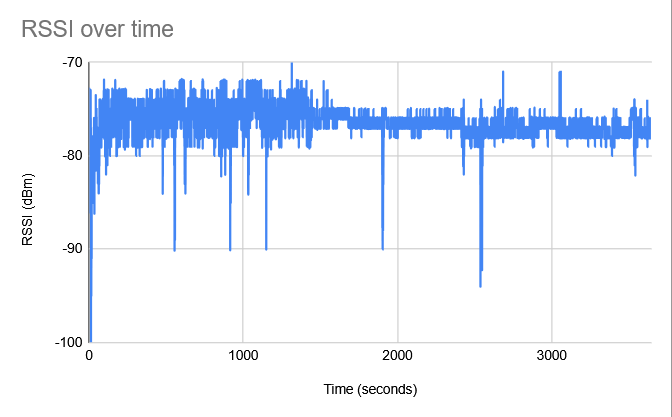
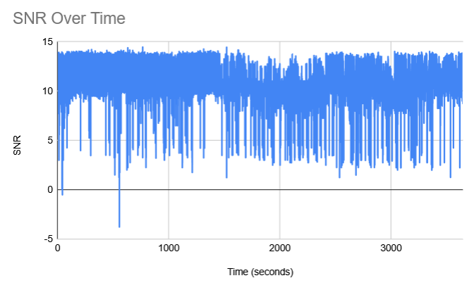

Project Overview
This project, as part of the Michigan Aeronautical Science Association (MASA), focuses on developing a robust, long-range telemetry system for high-altitude rockets. The primary goal is to ensure reliable, real-time data transmission from the rocket to a ground station, even at altitudes up to 75,000 feet.
The system utilizes LoRa (Long Range) communication in the 2.4GHz band, leveraging Chirp Spread Spectrum (CSS) modulation to achieve a resilient communication link. This is critical for post-flight analysis, especially in scenarios where the primary black box data recorder may be unrecoverable. This project addresses a key failure point from past launches by creating a redundant, live telemetry backup.
Technical Approach
LoRa Communication & Antennas
The core of the system is built around the SX1280 LoRa transceiver module. On the rocket, a patch antenna is integrated into one of the tailfins to provide a compact and aerodynamic solution for transmitting data. This placement helps maintain a clear signal path, especially during the rocket's descent phase.
LoRa modulation provides excellent resilience to interference and requires low power, making it ideal for a rocket's constrained environment. Our target is a 40Kbps telemetry data rate, which is a balance between data throughput and link reliability over long distances.
Dual-Antenna Ground Station
To maximize signal reception, the ground station employs a dual-antenna setup. This includes a high-gain directional Yagi antenna that must be aimed at the rocket and a semi-omni-directional dome antenna. This diversity helps mitigate signal loss due to rocket orientation changes during flight. An antenna splitter combines the signals before they are processed.
Link Budget Analysis
A critical part of the design process is the RF link budget analysis. By accounting for transmitter power (12.5 dBm), antenna gains (8 dBi ground, 6 dBi rocket), free-space path loss at 20km, and other system losses, we calculated a received power of -108.9 dBm. This is well within the SX1280's receive sensitivity of -132 dBm, providing a healthy link margin to ensure reliable communication.
Data Analysis & Results
Initial testing of the transmitter and receiver test boards has yielded promising data. The following plots show the Received Signal Strength Indicator (RSSI) and Signal-to-Noise Ratio (SNR) over time during a hotfire test, demonstrating a stable link against rocket plume.
RSSI Over Time
RSSI remains consistently around -75 dBm, indicating a strong signal.
SNR Over Time
SNR is stable above 10 dB, indicating a clear signal with low noise.
Firmware Snippets
Transmitter Code
void loop() {
// Prepare message and buffer
const char* message = "Hello to MASA!";
size_t msgLen = strlen(message);
uint8_t buffer[128] = {0};
// Prepend packet counter to the message
memcpy(buffer, &packetCounter, sizeof(packetCounter));
memcpy(buffer + sizeof(packetCounter), message, msgLen);
size_t totalLen = sizeof(packetCounter) + msgLen;
Serial.print("[SX1280] Transmitting packet #");
Serial.print(packetCounter);
// Transmit data using RadioLib
int state = radio.transmit(buffer, totalLen);
if (state == RADIOLIB_ERR_NONE) {
Serial.println("Success!");
packetCounter++;
} else {
Serial.print("Transmission failed, code ");
Serial.println(state);
}
delay(1000);
}
Receiver Code
void handleReceivedPacket() {
uint8_t buffer[128] = {0};
int state = radio.readData(buffer, sizeof(buffer));
float rssi = radio.getRSSI();
float snr = radio.getSNR();
if (state == RADIOLIB_ERR_NONE) {
uint32_t packetCounter;
memcpy(&packetCounter, buffer, sizeof(packetCounter));
metrics.totalPackets++;
if (metrics.totalPackets == 1) {
metrics.expectedPacketCounter = packetCounter + 1;
} else {
if (packetCounter != (metrics.expectedPacketCounter - 1)) {
// Logic to detect and count lost packets
uint32_t lost = packetCounter - metrics.expectedPacketCounter;
metrics.lostPackets += lost;
}
metrics.expectedPacketCounter = packetCounter + 1;
}
// Update signal metrics (RSSI, SNR, Power)
updateSignalMetrics(rssi, snr);
}
radio.startReceive(); // Re-enter receive mode
}